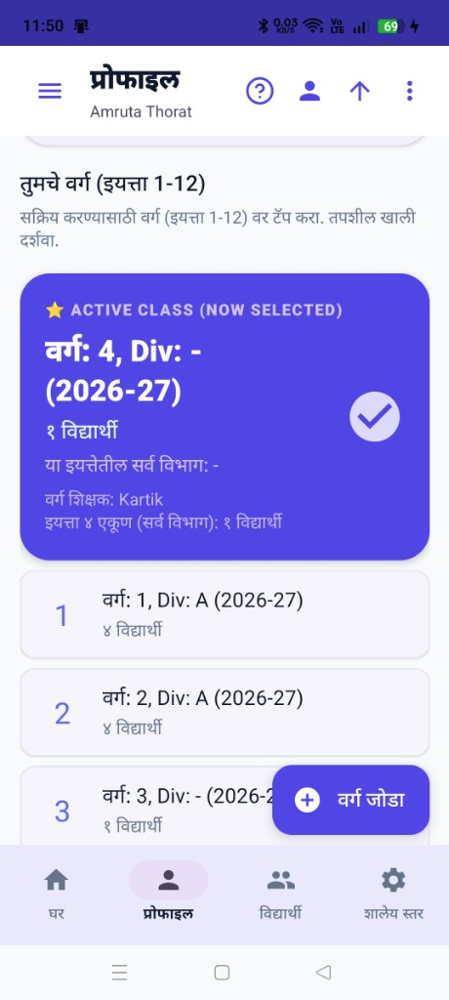
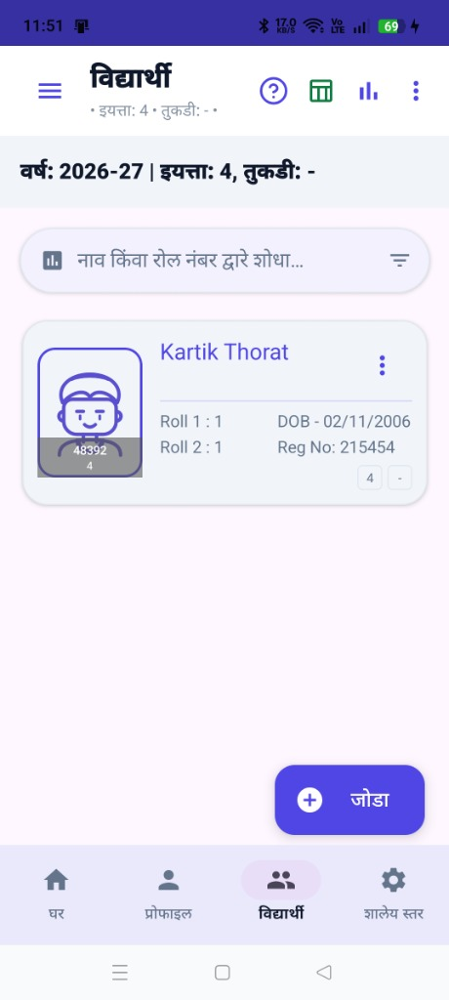
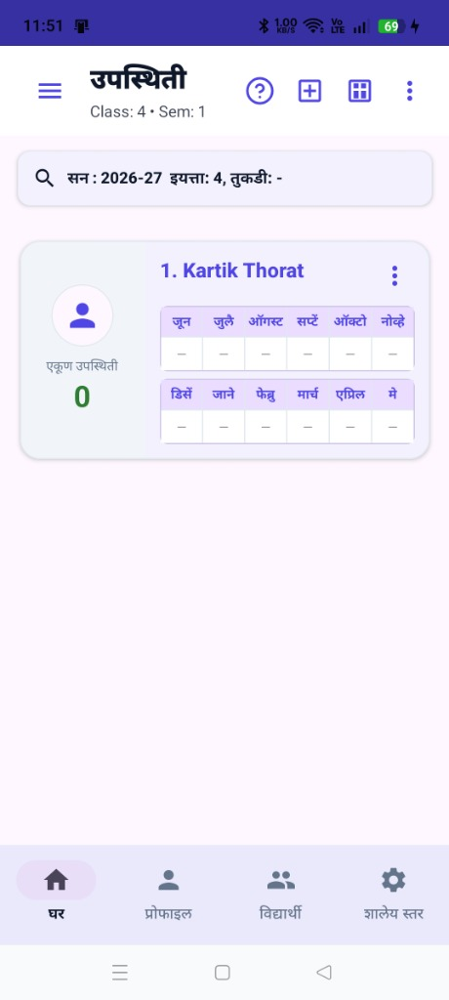
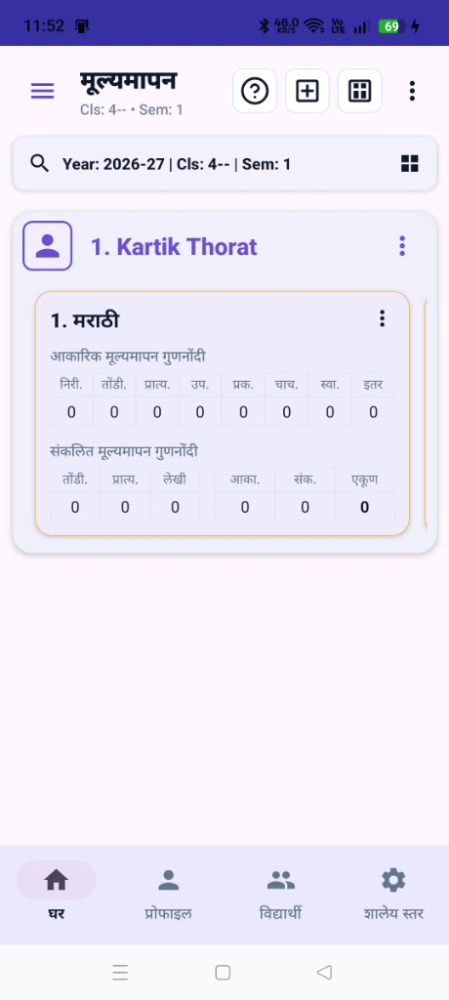
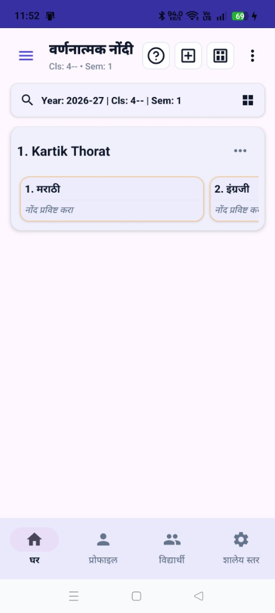
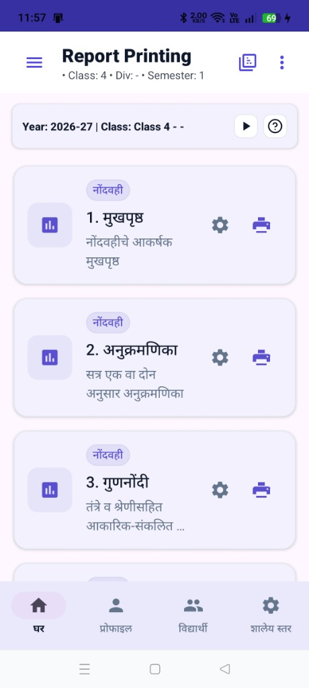
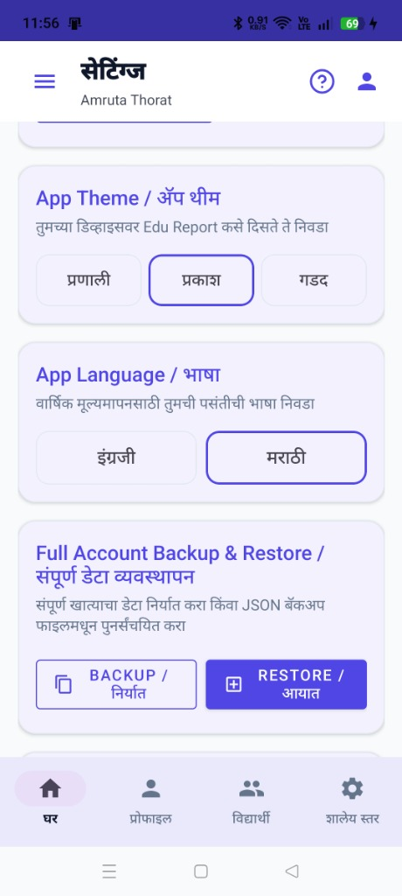

१. पहिली स्टेप: वर्ग जोडणे
सुरुवात करण्यासाठी 'प्रोफाईल' टॅबवर जाऊन प्रथम तुमचे शैक्षणिक वर्ष, सत्र निवडा आणि तुमचा नवीन वर्ग व तुकडी (उदा. 5-A) तयार करा.

२. दुसरी स्टेप: विद्यार्थी जोडणे
विद्यार्थी यादी पेजवर जाऊन नवीन विद्यार्थ्यांची नोंदणी करा. तुम्ही एका क्लिकवर एक्सेल फाईलमधून सर्व विद्यार्थी आयात (Import) करू शकता.

३. तिसरी स्टेप: हजेरी नोंदवणे
विद्यार्थी जोडल्यानंतर 'मासिक हजेरी' स्क्रीनवर जाऊन प्रत्येक विद्यार्थ्याची दर महिन्याची हजर दिवसांची नोंद करा.

४. चौथी स्टेप: गुण भरणे (FA & SA)
मूल्यमापन स्क्रीनवर प्रत्येक विषयाचे आकारिक (FA) आणि संकलित (SA) गुण भरा. गुण टाकण्यासाठी स्मार्ट कीबोर्डचा वापर करा.

५. पाचवी स्टेप: वर्णनात्मक नोंदी
शाळेच्या शेरे बँकेतून (Remark Bank) विद्यार्थ्यांच्या वर्तन आणि प्रगतीबाबतचे वर्णनात्मक शेरे एका क्लिकवर निवडून नोंदवा.

६. सहावी स्टेप: अहवाल आणि प्रगतीपत्रक
सर्व माहिती भरून झाल्यावर 'अहवाल (Reports)' विभागात जा. तेथे तुम्ही सेकंदात विद्यार्थ्यांचे सुंदर प्रगतीपत्रक (PDF), रजिस्टर पृष्ठे तयार करून प्रिंट करू शकता.

७. सातवी स्टेप: डेटा बॅकअप
तुमचा मौल्यवान डेटा गमावू नये म्हणून सेटिंग्जमध्ये जाऊन नेहमी स्थानिक बॅकअप घ्या (Export Backup). नवा फोन घेतल्यास तुम्ही तो डेटा पुन्हा मिळवू शकता.
